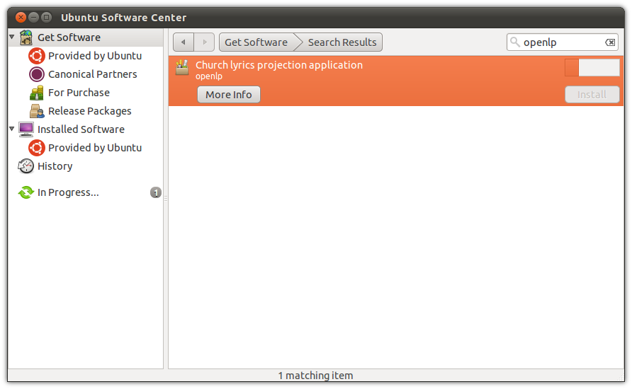

Installing OpenLP on Linux
Setting up OpenLP varies by distribution. We have included documentation on popular distributions or distributions that have OpenLP available from their package managers. It should be possible to get OpenLP running on nearly any Linux distribution.
Ubuntu
Installation of OpenLP on Ubuntu can either be done through the Software Center or the command line. Command line instructions will be included at the end of this section on Ubuntu and its variants.
OpenLP 2.4 supports Ubuntu 14.04 or later versions. There is currently an older version of OpenLP available in the official Ubuntu repositories, which can be found using the Software Center, but to get OpenLP 2.4 it is necessary to add the OpenLP Personal Package Archive (PPA) to your system.
Ubuntu, Ubuntu GNOME, Xubuntu
Open up the software center using and select the Software Center from the bottom of the menu. You will need to be the administrator of the system to install OpenLP and will be asked for the administrator password several times through this process.
Then go to
Click on the tab then click on the Add... button to add the new software source.
Add the APT line:
ppa:openlp-core/release
Click Add Source

You now need to restart the Software Center to refresh the package list. When you have the Software Center running simply search for OpenLP and click Install.

You will see the install progress as OpenLP and the dependencies required for it to run are downloaded.
After installation you should see that OpenLP is installed.

You can now run OpenLP by either searching for it in the Dash, or clicking on the category Media Apps in Unity. If you are running the Classic Desktop you will have OpenLP available by clicking
Kubuntu
From the Kickoff Menu click System Settings Then click on Software Management.
Click on settings in the left hand column.

Click on the Edit Origins button.
Click on the Other Software tab.

Click the Add button.

Type the following in the text box:
ppa:openlp-core/release
After clicking OK you should now see new entries for OpenLP
Click Close when given the option to reload the software information click the Reload button.
Click on Get and Remove Software in the left column. Type openlp in the search box. Next, click on Find by name. Once OpenLP is located click on the search result and click on Install. Click the Apply button to install OpenLP
You should now see the progress of the download.
Once completed you may have the option to start OpenLP from the window pictured below. If this feature is not enabled, you can start OpenLP from the Kickoff menu.
Ubuntu Command Line Install
First you will need to add the Personal Package Archive (PPA) to Ubuntu’s software sources. From a terminal type:
user@ubuntu:~$ sudo add-apt-repository ppa:openlp-core/release
Now you need to refresh the package list:
user@ubuntu:~$ sudo apt-get update
Install OpenLP:
user@ubuntu:~$ sudo apt-get install openlp
OpenLP should now be available in your desktop’s menu system, but if you wish to run OpenLP from the command line type:
user@ubuntu:~$ openlp
Fedora
To install OpenLP on Fedora follow the instructions below. The instructions describes how to do the install when using GNOME, KDE or the command line.
Note When installing OpenLP you will need to have administrator privileges. You will be asked for the administrator password to install.
Fedora (GNOME)
Installing with Fedora you will use the default Add/Remove Programs available from in Fedora 14 and below or in

Search for OpenLP in the search box
Check the check box for OpenLP then click Apply
Click Continue to confirm installing any additional software.

You should now see the packages downloading in the lower left corner.

Click Run to run OpenLP now, or Close to run OpenLP later.
OpenLP will be available in
Fedora (KDE)
From the Kickoff open Software Management. Type OpenLP into the search
box. Then click Find by name or press Enter.

Select OpenLP from the search results. Next, click Apply
Now give permission to install other software dependencies that are needed by clicking Continue

Once completed you can run OpenLP by clicking on its logo in the completed install notification, or from the Kickoff menu.
Fedora Command Line Install
To install OpenLP from the command line type:
user@fedora:~$ sudo yum install openlp
OpenLP should now be available in your desktop’s menu system, but if you wish to run OpenLP from the command line type:
user@fedora:~$ openlp
Linux Mint
The following instructions are for a standard Linux Mint install. These instructions will not work with Linux Mint Debian Edition. Most users should be able to follow the instructions for Software Manager Install, but if your are running Linux Mint without the standard desktop please see the Linux Mint Command Line Install install instructions.
Software Manager Install
The administrator password will be required several times during the installation. To install OpenLP open the Software Manager from the Mint Menu.
The OpenLP personal package archive (PPA) will need to be added. Click on

Click on the Other Software tab.
Click on the Add... button to add the new software source.
Add the APT line:
ppa:openlp-core/release
Click Add Source.

Click Reload to reload your software sources.

Type OpenLP into the search box to locate the OpenLP package.
Click on OpenLP from the results then click Install.

After OpenLP is installed you can close the Software Manager and start OpenLP from the Sound and Video section of the Mint Menu.
Linux Mint Command Line Install
You will need to add the Personal Package Archive (PPA) to Linux Mint’s software sources. From a terminal type:
user@mint:~$ sudo add-apt-repository ppa:openlp-core/release
Now you need to refresh the package list:
user@mint:~$ sudo apt-get update
Install OpenLP:
user@mint:~$ sudo apt-get install openlp
OpenLP should now be available in your desktop’s menu system, but if you wish to run OpenLP from the command line type:
user@mint:~$ openlp
openSUSE
OpenLP is available using 1-Click Install on the openSUSE Build Service
website. Go to the openSUSE Build Service site
and type openlp into the search box.
Then click 1-Click Install

Select Open with YaST 1-Click Install then click OK

Additional repositories may need to be enabled. This will be performed automatically. Accept the default options by clicking Next
Confirm you want to install OpenLP and click Next
Before the installation takes place confirm adding the repositories and installing the software again. Click Next to continue.

Since this is a third party application the software key will have to be accepted. Click Trust to accept the software key.

OpenLP will now be installed. When the install process is completed click Finish.
OpenLP will now be available for use.
Arch Linux
OpenLP is available on Arch Linux through the Arch User Repository, or AUR. Info on the AUR can be found at the Arch wiki.
There are a variety of tools and methods to install from the AUR. For this example we will demonstrate using Yaourt. For more info on Yaourt please see the Yaourt documentation.
From a terminal type:
user@arch:~$ yaourt -S openlp
OpenLP should now be available in your desktop’s menu system, but if you wish to run OpenLP from the command line type:
user@arch:~$ openlp